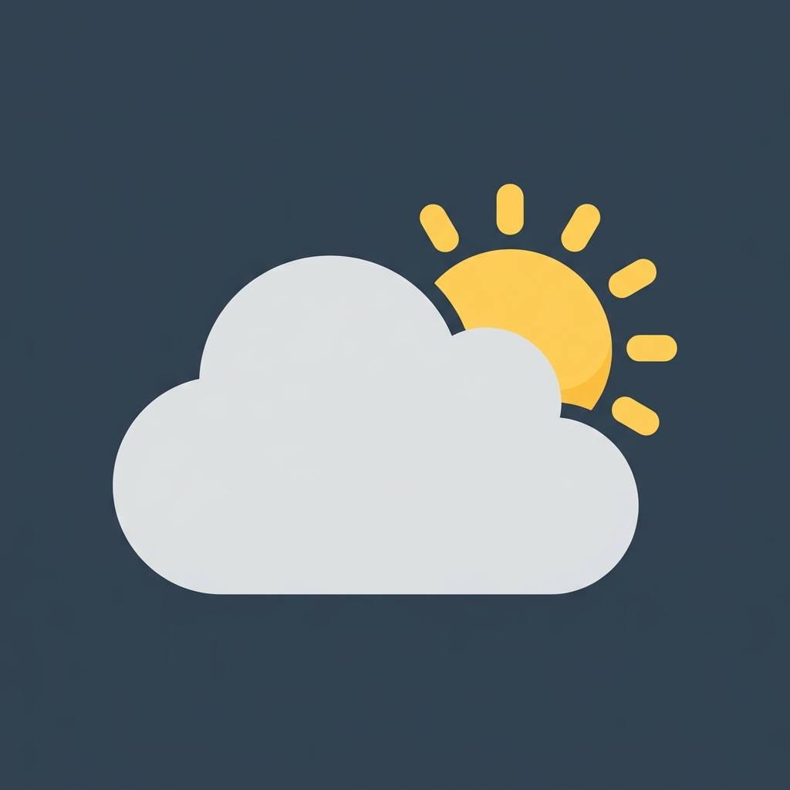
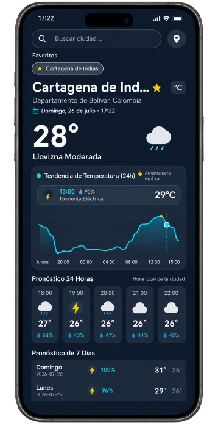

AURAEl Clima en Armonía con tu Ritmo
Aura es una app de clima de última generación para Android. Minimalista, intuitiva y consciente del tiempo real. Experimenta su nuevo Tema Oscuro Elegante unificado, máxima seguridad en el resguardo de datos y rendimiento asíncrono ultra fluido.

El Nuevo Widget, En tu Navegador
Prueba la simulación interactiva de nuestro Widget nativo para Android. Descubre el fondo de vidrio esmerilado translúcido, las recomendaciones en rotación continua y el gráfico de líneas continuo para las próximas 24 horas. ¡Elige una ciudad y observa los cambios instantáneos!
Madrid
Tendencia de Temperatura para las Próximas 24 Horas Recharts-powered tooltips
La Fusión de Ingeniería y Diseño
Aura reimagina la forma en la que consultas el pronóstico, integrando una arquitectura robusta fuera de línea con el diseño interactivo más moderno.

Todas las Funciones Esenciales de Aura
Visualización de la suite completa: pronóstico en tiempo real, tendencia de 24h, geocodificación GPS con autocompletado, favoritos guardados en base de datos local y resumen matutino en segundo plano.
🌙 Tema Oscuro Global Elegante
Experiencia inmersiva en modo noche con paleta de color Deep Night Slate (#0B1120), contraste optimizado, tipografía legible y gradientes atmosféricos en Jetpack Compose.
🔒 Seguridad & Resguardo Local
Protección de datos personales en el dispositivo con respaldo en la nube desactivado (allowBackup=false) para evitar filtraciones y almacenamiento cifrado en Room SQLite.
📍 GPS & Geocoding Asíncrono
Detección instantánea de latitud y longitud con resolución inversa realizada en hilos Dispatchers.IO para evitar cualquier congelamiento en la interfaz de usuario.
📅 Pronósticos Precisos
Sin datos históricos redundantes ni espacios vacíos. El scroll horizontal de pronóstico para las próximas 24 horas se inicia exactamente en tiempo real a partir de la hora actual.
🔍 Autocompletado Espacial
Busca en cualquier latitud. Al ingresar más de 3 letras, Aura consulta una base de datos geocodificada global para sugerir coincidencias inteligentes con debounce y saneamiento de texto.
⚡ Consultas SQL & Red de Alta Velocidad
Optimización de consultas Room DAO mediante rangos SQL de índice directo y políticas de conexión en Retrofit/OkHttp con timeouts de 15 segundos para máxima resistencia.
🛡️ Tolerancia a Errores & Rescate
Traducción amigable de fallos de red/servidor al español, notificaciones flotantes Snackbar, retroalimentación de búsquedas vacías y botón de rescate inmediato para volver a la ubicación predeterminada.
Documentación Detallada de la Interfaz de Usuario
La interfaz de Aura en Jetpack Compose ha sido diseñada bajo los estándares de Material Design 3 (M3). A continuación se explica en detalle cada uno de los componentes, secciones e iconos interactivos presentes en la pantalla principal.
1. Barra Superior de Búsqueda & GPS
Ubicada en la parte superior con soporte Edge-to-Edge. Permite buscar ciudades globales por nombre en tiempo real o autodetectar la posición del usuario.
2. Cinturón de Ubicaciones Favoritas
Fila horizontal deslizable (LazyRow) con chips interactivos que muestran las ciudades guardadas en la base de datos SQLite con Room.
#FFD700. Tocar un chip cambia al instante la ubicación activa sin necesidad de volver a buscar.
3. Cabecera de Ubicación & Hora Local
Presenta el nombre de la ciudad, provincia/país, hora local exacta en tiempo real calculada con la zona horaria del lugar buscado y selector de unidades.
4. Gráfica Interactiva de Tendencia (24h)
Curva suave Bezier dibujada sobre Canvas en Jetpack Compose con soporte de gestos táctiles (Tap y Drag) para inspeccionar la evolución térmica hora por hora.
Catálogo de Gráficos y Símbolos Meteorológicos
En lugar de imágenes estáticas pixeladas, Aura utiliza renderizados vectoriales con Jetpack Compose Canvas (WeatherConditionGraphic) para dibujar el clima de forma fluida y de alta resolución:
Cielo Despejado (Día)
Código WMO: 0, 1Círculo central dorado con rayos vectoriales radiantes. Representa cielos limpios y soleados.
Cielo Despejado (Noche)
Código WMO: 0, 1 (Noche)Luna creciente plateada con tres estrellas titilantes dibujadas a su alrededor.
Nublado / Parcialmente Nublado
Código WMO: 2, 3Estructura combinada de óvalos superpuestos en tonos blanco y gris slate para nubes acumulativas.
Niebla / Escarcha
Código WMO: 45, 48Líneas horizontales en capas con bordes redondeados y opacidad translúcida.
Lluvia / Llovizna / Chubascos
Código WMO: 51-67, 80-82Nube gris slate acompañada de gotas inclinadas dibujadas en tono turquesa fluorescente (#80DEEA).
Nevada / Granos de Nieve
Código WMO: 71-77, 85-86Nube blanca pura acompañada de copos circulares flotantes dispersos en la base.
Tormenta Eléctrica / Granizo
Código WMO: 95, 96, 99Nube oscura en tono plomo con rayo vectorial en zigzag amarillo brillante en el centro.
📊 Métricas Detalladas, Avisos y Botones de Control
Cada métrica meteorológica utiliza un identificador visual y subtítulo contextual para facilitar su lectura:
Sensación Térmica
Muestra la temperatura aparente calculada en función de la humedad y el viento.
Viento & Dirección
Velocidad del viento en km/h y orientación en grados sexagesimales.
Humedad Relativa
Porcentaje de vapor de agua en la atmósfera respecto al punto de saturación.
Probabilidad de Lluvia
Porcentaje de probabilidad máxima de precipitación proyectada en la hora o día.
Índice UV
Clasificación de la intensidad ultravioleta (Bajo, Moderado, Alto o Extremo).
Amanecer y Atardecer
Horas exactas del orto y el ocaso del sol en la ubicación geográfica actual.
Avisos Severos
Barra roja de emergencia que se despliega si hay olas de calor/frío o vientos extremos.
Resumen Matutino (WorkManager)
Indica la programación diaria de las 07:30 AM e incluye el botón 🚀 para probar la notificación.
Botón de Rescate (Madrid)
Aparece en la pantalla de error de conexión para restablecer la app a la ciudad base.
La Calidad bajo el Capó
La ingeniería del software de Aura está alineada con las mejores prácticas modernas para garantizar que el aplicativo escale de forma limpia, robusta y testeable:
-
✓
MVVM & StateFlow reactivo
Organización estructurada donde los datos fluyen reactivamente sin fugas de memoria o acoplamientos rígidos.
-
✓
Consumo Seguro de API local
Llamadas HTTP no bloqueantes por Corutinas usando Retrofit, convertidas mediante Moshi de forma tipada.
-
✓
Edge-to-Edge y M3 Dinámico
Respeto milimétrico de la barra de estado y navegaciones del sistema, integrando colores puros de Material 3.
package com.aura // Arquitectura del Proyecto com.aura ├── MainActivity.kt // Entry Point (Edge-to-Edge) ├── AuraApplication.kt // Inicializador WorkManager ├── data │ ├── api │ │ └── WeatherApiService.kt // Retrofit REST Client │ ├── db │ │ ├── ClimaDatabase.kt // Room SQLite DB │ │ └── FavoriteDao.kt // Queries SQL │ └── repository │ └── WeatherRepositoryImpl.kt // Source of Truth ├── domain │ ├── model/usecase // Casos de Negocio ├── worker │ └── DailyWeatherWorker.kt // WorkManager Tasks └── ui ├── theme │ └── Theme.kt // M3 Theme & Gradients └── weather ├── WeatherDashboardScreen.kt // UI Principal ├── TemperatureTrendChart.kt // Gráfica 24h Compose └── WeatherViewModel.kt // StateFlow Engine
Política de Privacidad de Aura
Tu privacidad es fundamental. Aura ha sido construida bajo el principio de minimización de datos: no requerimos cuentas, no rastreamos tu historial y almacenamos tus preferencias de manera estrictamente local.
1. Permisos de Ubicación (GPS)
Aura solicita acceso a la ubicación GPS únicamente cuando abres la aplicación o presionas el botón de sincronización. No rastreamos tu ubicación en segundo plano ni almacenamos un historial de los lugares que visitas.
2. Base de Datos Local (Room SQLite)
Tus ubicaciones favoritas y los datos meteorológicos cacheados se guardan exclusivamente en tu dispositivo (ClimaDatabase). No se suben a ningún servidor externo ni nube de terceros.
3. Sin Cuentas ni Datos Personales
Aura no requiere registro, correos electrónicos ni contraseñas. Tampoco incluye rastreadores publicitarios ni cookies comerciales. No recopilamos ni vendemos información personal (PII).
4. Notificaciones y Servicios API
Las notificaciones matutinas son generadas localmente en el dispositivo vía WorkManager. Para obtener el clima, la app consulta APIs públicas (Open-Meteo) enviando solo las coordenadas sin identificadores de usuario.
📄 Documento Oficial de Políticas de Privacidad
Actualizado: Julio 20261. Introducción
Aura Clima ("nosotros", "la aplicación") se compromete a respetar y resguardar la privacidad de sus usuarios. Esta política establece de forma clara las pautas de manejo de información para la aplicación móvil Android de Aura.
2. Uso de Permisos Android
Para brindar un pronóstico preciso, la app solicita los siguientes permisos dinámicos en tiempo de ejecución:
- ACCESS_FINE_LOCATION & ACCESS_COARSE_LOCATION: Permite obtener las coordenadas de latitud y longitud actuales exclusivamente al solicitar el clima por GPS.
- POST_NOTIFICATIONS: Permite mostrar alertas del clima y el resumen matutino diario programado mediante WorkManager.
3. Transferencia de Datos y Terceros
No vendemos, alquilamos ni compartimos ningún dato con terceros. Las solicitudes de información meteorológica se realizan a proveedores de datos meteorológicos abiertos (como Open-Meteo) mediante peticiones directas HTTP/HTTPS que únicamente contienen coordenadas o texto de búsqueda ciudad/país, sin vincular ninguna dirección IP a perfiles de usuario.
4. Control del Usuario y Supresión de Datos
El usuario mantiene en todo momento el control total sobre la aplicación:
- Puedes revocar los permisos de ubicación desde la configuración del sistema operativo Android.
- Puedes eliminar la lista de ciudades favoritas individualmente o borrar los datos del caché desinstalando la aplicación o limpiando los datos en los ajustes de almacenamiento de Android.
5. Contacto
Para resolver dudas adicionales o realizar consultas sobre el código fuente y las políticas de privacidad, puedes visitar nuestro repositorio oficial de código abierto en GitHub: github.com/marto-ng/Aura.